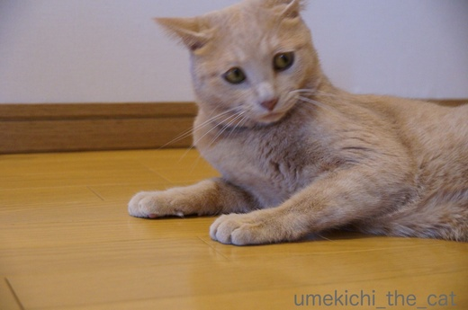
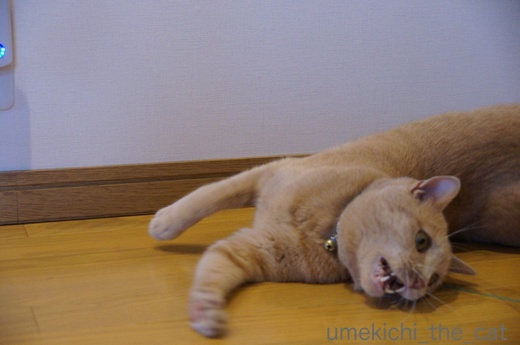
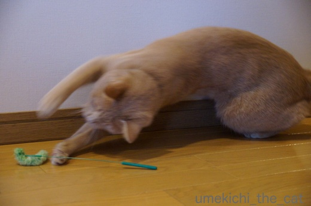
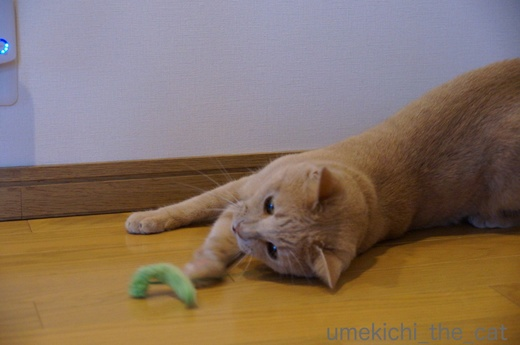
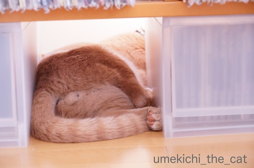
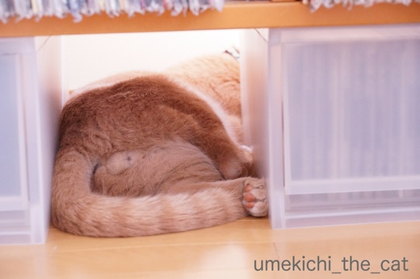
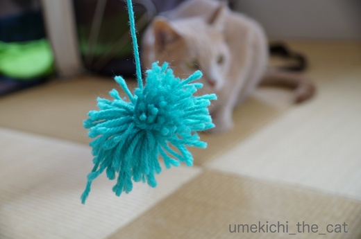
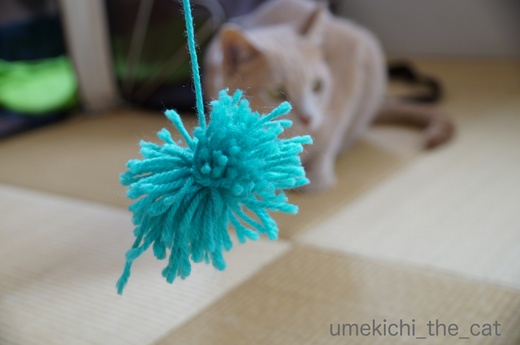

プールデビュー [梅吉]
梅吉さんにも水辺で涼をとってもらいましょう！とプールを買ってみました。

お水を入れてピンポン球を浮かべてみると

及び腰ならが早速やってくるカフェオレ色。
まずお水を味わって
![[猫]](https://blog.ss-blog.jp/_images_e/101.gif) ん？あれはなんや
ん？あれはなんや
出ました！これが私を籠絡した鼻チューです![[黒ハート]](https://blog.ss-blog.jp/_images_e/136.gif)

ほ〜ら、パシャパシャですよ〜。
え〜〜！まさかもう興味なし！？

じゃあ、これでどうだ！

うめきちぱんち いくでーっ
思ったほどのアクティブさはありませんでしたが
少しはお水遊びを楽しんでくれた様です。次はプールにinしてみようっと。
陽の陰った時間にベランダに出ましたがそれでもとんでもなく暑い。
ゆっくり遊びたいものの10〜15分くらいが限界です。
ひともにゃんこも熱中症になったら大変なので早々に切り上げたベランダ遊びでした。
 ↑ガブッと一押し↑
↑ガブッと一押し↑

お水を入れてピンポン球を浮かべてみると

及び腰ならが早速やってくるカフェオレ色。
まずお水を味わって
出ました！これが私を籠絡した鼻チューです

ほ〜ら、パシャパシャですよ〜。
え〜〜！まさかもう興味なし！？

じゃあ、これでどうだ！

思ったほどのアクティブさはありませんでしたが
少しはお水遊びを楽しんでくれた様です。次はプールにinしてみようっと。
陽の陰った時間にベランダに出ましたがそれでもとんでもなく暑い。
ゆっくり遊びたいものの10〜15分くらいが限界です。
ひともにゃんこも熱中症になったら大変なので早々に切り上げたベランダ遊びでした。
２回目のうちの子記念日＆ブログ１周年 [梅吉]
今日、7月26日は梅吉が我が家にやって来た2回目のうちの子記念日です![[ぴかぴか（新しい）]](https://blog.ss-blog.jp/_images_e/150.gif)
ねこの保護活動をしているNPO法人の里親会に出かけたのが7月19日。
引き取るのはどの子でも良かったのですがそんな答えじゃ主催者側も困っちゃうだろうから
第一希望（！！）仮名：みかんちゃん（メス）
第二希望（！！！）仮名：小太郎くん（オス）にエントリー。
翌日保護団体から「小太郎をお願いしたい」と連絡があり
この「小太郎くん（仮）」が我が家の梅吉となりました(๑˃̵ᴗ˂̵)و

梅吉きたーーーーーっ！（既出の写真ですが）
ちっさ〜い、はかなげ〜Ｏ(≧▽≦)Ｏ でも、イカ耳w
怯えるでも隠れるでもなく「ようおこし！」のささみをパクパク食べて
（お届けしてくれたNPOの方は、食が細い、って言ってたんだけど^^;）

用意したトレイに早速おしっこをして
私の横の椅子に置いた毛布の上でスヤスヤ眠り始めました。
大物やな。
やんちゃに遊びまわって

冬はぬくぬくとお膝の上で
（12秒です）
今時の子らしく動画を楽しんで
じぶんがいっちゃんすっきやねん！

夏でも家族にくっついて
（19秒です）
お水遊びを楽しんで
一人の時はのびのびと。

こんなにあどけなかった梅吉は

遊んで欲しいのにいつまでも写真を撮っているおかーさんにふて顔を見せる様になりました(≧艸≦)
そして昨年の梅吉うちの子記念日にスタートしたこのブログも１周年となりました。
たくさんの方にnice!やコメントをいただいて本当にありがたいことです。
今後もあまり代わり映えのしない梅吉話のブログになりますがどうぞよろしくお願い致します。
梅吉さんからも一言。

よろしくにゃーーーーーー！
↑ガブッと一押し↑
ねこの保護活動をしているNPO法人の里親会に出かけたのが7月19日。
引き取るのはどの子でも良かったのですがそんな答えじゃ主催者側も困っちゃうだろうから
第一希望（！！）仮名：みかんちゃん（メス）
第二希望（！！！）仮名：小太郎くん（オス）にエントリー。
翌日保護団体から「小太郎をお願いしたい」と連絡があり
この「小太郎くん（仮）」が我が家の梅吉となりました(๑˃̵ᴗ˂̵)و

梅吉きたーーーーーっ！（既出の写真ですが）
ちっさ〜い、はかなげ〜Ｏ(≧▽≦)Ｏ でも、イカ耳w
怯えるでも隠れるでもなく「ようおこし！」のささみをパクパク食べて
（お届けしてくれたNPOの方は、食が細い、って言ってたんだけど^^;）

用意したトレイに早速おしっこをして
私の横の椅子に置いた毛布の上でスヤスヤ眠り始めました。
大物やな。
やんちゃに遊びまわって

冬はぬくぬくとお膝の上で
（12秒です）
今時の子らしく動画を楽しんで

夏でも家族にくっついて
（19秒です）
お水遊びを楽しんで
一人の時はのびのびと。

こんなにあどけなかった梅吉は

遊んで欲しいのにいつまでも写真を撮っているおかーさんにふて顔を見せる様になりました(≧艸≦)
そして昨年の梅吉うちの子記念日にスタートしたこのブログも１周年となりました。
たくさんの方にnice!やコメントをいただいて本当にありがたいことです。
今後もあまり代わり映えのしない梅吉話のブログになりますがどうぞよろしくお願い致します。
梅吉さんからも一言。

やっぱりじゃらしが好き！ [梅吉]




梅吉さんが真剣に見つめていたのは

このグリーンのねこじゃらし。
梅吉を我が家に迎える時に買った「いわゆる普通のねこじゃらし」が壊れてしまったので
「エノコログサ風」なこのじゃらしを買ってみました。
竿の部分がワイヤーなのでびょんびょんと反動がつくのが面白いのかな。



夢中で遊んでおります！

おしっぽぴーーーーーんっ！！
きまぐれなお猫様だからその時々でお気に入りは変わりますが
やっぱりじゃらしへの食いつきは抜群ですね＾＾
このじゃらし、じゃらし部分に針金が仕込んであるので折れを繰り返しているうちに
ポッキリいきそうでもありますが・・・・・
抜け毛総決算 [梅吉]
先週末の３連休、これだけ暑かったら早く乾くよね、と梅吉をシャンプーしました。
そろそろ抜け毛も落ち着いて来たのでさらにスッキリしちゃいましょう！

シャンプー係のおっとが準備を始めるとバスルームをびっくりまなこで伺う梅吉さんww
なんやめっちゃいやなよかんや。

きのせいや、きのせいや・・・・・

でも目を逸らせない梅吉さんwwさらに近寄ってガン見(≧艸≦)

梅吉さんの動物的カンはよく当たりますねー。
はい、シャワーですよー。
みょ〜〜んと伸びて

おかーさんのそばにきて身震い！
わ〜、びょしょぬれになるからやめて〜。これは絶対嫌がらせだな。

次はあわあわですよ。
わわ、あわあわのまま近づいてこないでください![[あせあせ（飛び散る汗）]](https://blog.ss-blog.jp/_images_e/162.gif)

キラ〜ン![[目]](https://blog.ss-blog.jp/_images_e/84.gif)
あわあわで身震いはや〜め〜て〜
この後は二人掛かりでしっかりすすぎ。
充分タオルドライした後はあちこち動き回りながら一生懸命に舐めていました。
シャンプー後挙動不審になるのは相変わらずです。
疲れて白目寝。おつかれさん。
梅雨明けになりましたね。
今日の予報では我が家の辺りは37℃と言っていたので覚悟して外に出たのですが
あれ？以外に平気。
どうやら予報ほど高温にはならなかった様です。
大阪はいつまでも猛暑日が続いて熱帯夜も一月くらい続くのはザラなのに
全国一暑かった！とニュースになることがないんですよね。なんか悔しい( ･̆ˍ･̆ )
↑ガブッと一押し↑
そろそろ抜け毛も落ち着いて来たのでさらにスッキリしちゃいましょう！

シャンプー係のおっとが準備を始めるとバスルームをびっくりまなこで伺う梅吉さんww


でも目を逸らせない梅吉さんwwさらに近寄ってガン見(≧艸≦)

梅吉さんの動物的カンはよく当たりますねー。
はい、シャワーですよー。
みょ〜〜んと伸びて

おかーさんのそばにきて身震い！
わ〜、びょしょぬれになるからやめて〜。これは絶対嫌がらせだな。

次はあわあわですよ。
わわ、あわあわのまま近づいてこないでください

あわあわで身震いはや〜め〜て〜
この後は二人掛かりでしっかりすすぎ。
充分タオルドライした後はあちこち動き回りながら一生懸命に舐めていました。
シャンプー後挙動不審になるのは相変わらずです。
疲れて白目寝。おつかれさん。
梅雨明けになりましたね。
今日の予報では我が家の辺りは37℃と言っていたので覚悟して外に出たのですが
あれ？以外に平気。
どうやら予報ほど高温にはならなかった様です。
大阪はいつまでも猛暑日が続いて熱帯夜も一月くらい続くのはザラなのに
全国一暑かった！とニュースになることがないんですよね。なんか悔しい( ･̆ˍ･̆ )
エアコンの恩恵 [梅吉]
夜の気温も25℃以上の熱帯夜が続き本格的に暑くなって来た大阪です。
３日ほど前からリビングのエアコンは梅吉のためにも一日中つけっぱなし。
冷やしすぎも良くないので日中のリビングの温度は大体29〜30℃くらいになる様な設定。
動いて汗をかくくらいが我が家の室内の適温です。
通常生活している範囲の温度が29〜30℃ということは人間の頭より上の場所は
もっと温度が高いはずなのですが・・・

暑くても上を目指す漢、梅吉。
お湯を沸かしたり調理をしている時でもレンジフードの上に陣取ります。

冷蔵庫の上も好き。（冬限定かと思っていたら違った・・・）
冷蔵庫の上ってモーターみたいの付いているから熱いんですけど・・・・・
この写真は満足そうなお顔ですが、魂が抜けた様にトオイメの時も。
正直暑いんじゃないですか？(^▽^;)

日当たりの良い窓の下も最近ブームの場所。
エアコン直下すぎて冷気は届かずしかも狭い。

先ほどの写真、上から頭部分を見るとこんな感じです。
体勢にも無理がありあり、暑い＆狭いで苦行の様ですww
とことん自分を追い込んで一体どうするつもりでしょうか・・・・・

そんな漢、梅吉も暑さMAXになるとエアコンの冷気はあまり届きませんが
ちょっと涼しい廊下で cool down。放熱ポイントはあちの肉球の様です。
両肉球ともにきっちり上向きーーーー！Ｏ(≧▽≦)Ｏ

さらに涼を求める時は洗面ボールへgo！

あせかくのもたいせつや。せやけどひやす のもひつようやで。
と、涼をとるにもナチュラルな方法であまりエアコンの恩恵を受けようとは思っていない様です。
エアコンつけっぱなしは梅吉のための様なものなのに・・・
飼い主が思うよりも寒がりなのかな？
冷風を浴び続けるよりも健康的なんですけどね＾＾
でも朝の洗面ボール占拠はやめて〜。
↑ガブッと一押し↑
３日ほど前からリビングのエアコンは梅吉のためにも一日中つけっぱなし。
冷やしすぎも良くないので日中のリビングの温度は大体29〜30℃くらいになる様な設定。
動いて汗をかくくらいが我が家の室内の適温です。
通常生活している範囲の温度が29〜30℃ということは人間の頭より上の場所は
もっと温度が高いはずなのですが・・・

暑くても上を目指す漢、梅吉。
お湯を沸かしたり調理をしている時でもレンジフードの上に陣取ります。

冷蔵庫の上も好き。（冬限定かと思っていたら違った・・・）
冷蔵庫の上ってモーターみたいの付いているから熱いんですけど・・・・・
この写真は満足そうなお顔ですが、魂が抜けた様にトオイメの時も。
正直暑いんじゃないですか？(^▽^;)

日当たりの良い窓の下も最近ブームの場所。
エアコン直下すぎて冷気は届かずしかも狭い。

先ほどの写真、上から頭部分を見るとこんな感じです。
体勢にも無理がありあり、暑い＆狭いで苦行の様ですww
とことん自分を追い込んで一体どうするつもりでしょうか・・・・・

そんな漢、梅吉も暑さMAXになるとエアコンの冷気はあまり届きませんが
ちょっと涼しい廊下で cool down。放熱ポイントはあちの肉球の様です。
両肉球ともにきっちり上向きーーーー！Ｏ(≧▽≦)Ｏ

さらに涼を求める時は洗面ボールへgo！

と、涼をとるにもナチュラルな方法であまりエアコンの恩恵を受けようとは思っていない様です。
エアコンつけっぱなしは梅吉のための様なものなのに・・・
飼い主が思うよりも寒がりなのかな？
冷風を浴び続けるよりも健康的なんですけどね＾＾
でも朝の洗面ボール占拠はやめて〜。
あほっさ [梅吉]
「あほっさ」ってなによ？ですよねー(≧▽≦)

じっとしているな、と思ったら

突然びょ〜ん。

まったりしているな、と見ていたら

突然走る！

走る！！

走り過ぎ〜！！！

じゃあ、わし、とぶで！！！！
・・・・・・と梅吉は（他のお家のにゃんずさんもですよね？）突然火がついた様に走り出します。
走るだけでは物足りないのか窓枠をよじ登るという垂直運動も含まれます。
一体この行動はなんなのでしょう(･◇･)
夕方以降に多い様な気がするので狩の行動なのかなぁ。
我が家ではこの行動を「あほ」な「発作」＝「あほっさ」と呼んでいます(*>艸<)
↑ガブッと一押し↑

じっとしているな、と思ったら

突然びょ〜ん。

まったりしているな、と見ていたら

突然走る！

走る！！

走り過ぎ〜！！！

・・・・・・と梅吉は（他のお家のにゃんずさんもですよね？）突然火がついた様に走り出します。
走るだけでは物足りないのか窓枠をよじ登るという垂直運動も含まれます。
一体この行動はなんなのでしょう(･◇･)
夕方以降に多い様な気がするので狩の行動なのかなぁ。
我が家ではこの行動を「あほ」な「発作」＝「あほっさ」と呼んでいます(*>艸<)
タグ：あほっさ
梅吉、平たくなる [梅吉]
遊んでいるうちにへんなスイッチの入った梅吉さん。

ローテーブルの下に入るんですか！？

ちっさい頃はいけましたけど今は無理じゃないですか〜？

ぐいぐいぐいぐい

ぎゅい〜〜〜〜ん

このあと入って見えなくなりました。

テーブルとフローリングの隙間9㎝。
のびーんと長くなったり、ちまっと短くなるな、とは思っていましたが
平たくなるとは・・・・

満足ですかー？楽しいですかー？
これは７ヶ月頃の写真。キッチンの食器棚の上の隙間。
幼くて今より更にスリムだったのでこんな狭いところにも入れました。
この場所、一年に一度しか掃除しないし（ふふふ）
ホコリだらけだろうから今入られたら困るよね、まさか入らないよね・・・
念のため測ってみたら
あわわわわわわわwwwww９㎝！掃除しなきゃ！！
↑ガブッと一押し↑

ローテーブルの下に入るんですか！？

ちっさい頃はいけましたけど今は無理じゃないですか〜？

ぐいぐいぐいぐい

ぎゅい〜〜〜〜ん

このあと入って見えなくなりました。

テーブルとフローリングの隙間9㎝。
のびーんと長くなったり、ちまっと短くなるな、とは思っていましたが
平たくなるとは・・・・

満足ですかー？楽しいですかー？
これは７ヶ月頃の写真。キッチンの食器棚の上の隙間。
幼くて今より更にスリムだったのでこんな狭いところにも入れました。
この場所、一年に一度しか掃除しないし（ふふふ）
ホコリだらけだろうから今入られたら困るよね、まさか入らないよね・・・
念のため測ってみたら
あわわわわわわわwwwww９㎝！掃除しなきゃ！！
ボルサリーノ for にゃんず 日本限定発売！？ [梅吉]
「アンダルシアに憧れて」の歌詞に登場したり大臣のあそーさん、次元大介がご愛用なことから
日本でも有名なイタリアの老舗高級帽子ブランド、ボルサリーノ。
なんと！にゃんこ向けの帽子が日本某所で発売！？！？
どんな帽子なのかモデルの梅吉さんに披露していただきましょう。

ななめかぶりすると だんでーやで。 ぼぎー いうおっちゃんもにげだすやろ。

めんちきるとな はくりょくまんてんや。 かぽね いうおっちゃんもたじたじや。

ちょっとあそんでみたで。たろー いうおっちゃんよりいけてるやろ。

まえめにがぶるとな ろいやる なかんじや。やんごとないうまれは かくせるもんやない。
以上、本家ボルサリーノとは全く関係ない3coinsでゲットしたお帽子でした〜(≧艸≦)
この帽子、おとーさんの帽子と通じるものが。
梅吉さんがその気なうちに素敵な２ショット撮りましょうよ〜。
おとーさん、それはあかん・・・・・
おとーさん首にタオルを巻いたままの痛恨のミス。
庭仕事のおっちゃんと首の後ろに麦わら帽子を引っ掛けた
夏休みの少年の写真になっちゃいました(^▽^;)
↑ガブッと一押し↑
日本でも有名なイタリアの老舗高級帽子ブランド、ボルサリーノ。
なんと！にゃんこ向けの帽子が日本某所で発売！？！？
どんな帽子なのかモデルの梅吉さんに披露していただきましょう。


以上、本家ボルサリーノとは全く関係ない3coinsでゲットしたお帽子でした〜(≧艸≦)
この帽子、おとーさんの帽子と通じるものが。
梅吉さんがその気なうちに素敵な２ショット撮りましょうよ〜。
おとーさん首にタオルを巻いたままの痛恨のミス。
庭仕事のおっちゃんと首の後ろに麦わら帽子を引っ掛けた
夏休みの少年の写真になっちゃいました(^▽^;)
期待通りには行きません・・・ [梅吉]
楽しいだろうと毛糸をポンポンにしてみたら

ガン無視・・・

え？それでいいんですか？？

食いついたのは持ち手用のただのヒモ部分。
買ってきたネズミのおもちゃは本体ではなく
しっぽとしてついているただのゴムが良いらしい・・・

え〜〜〜〜〜？それ〜〜〜〜〜？？
遊んでくれないよりいいですけどね。

ねずみはそんな気がしましたがポンポンは絶対にウケると思ったのにー。
毛糸玉だと遊ぶんですよ。
梅吉の好み、まだまだ把握しきれてません。なんて奥深い・・・
↑ガブッと一押し↑

ガン無視・・・

え？それでいいんですか？？

食いついたのは持ち手用のただのヒモ部分。
買ってきたネズミのおもちゃは本体ではなく
しっぽとしてついているただのゴムが良いらしい・・・

え〜〜〜〜〜？それ〜〜〜〜〜？？
遊んでくれないよりいいですけどね。

ねずみはそんな気がしましたがポンポンは絶対にウケると思ったのにー。
毛糸玉だと遊ぶんですよ。
梅吉の好み、まだまだ把握しきれてません。なんて奥深い・・・
せまい方が落ち着く梅吉 [梅吉]
ついにあの場所を取るサークルをしまいました！
ここ一週間くらいは入ることもほとんどなかったので片付けようと畳んでいると
「わしあそぶー」と飛んでくる猫あるある。
どうせ広げても一瞬入って興味を失うのだから、と替わりにキャリーを広げてあげました。
早速入る梅吉さん。
♪〜
こんぱくと、なかんじでええやん。おちつくで。

縦にも横にものびーが出来る様に全て解放。

せまいながらもくつろいでます＾＾
例のサークルは遊ぶ場所ではありましたがこんなふうに中で寝る事はありませんでした。
ベッドとしておいてあるカゴや箱も好んで使うのが一番小さいサイズ。
私が子供の頃もソファの影、本棚の間、ローテーブルの下とせまい場所が好きでした。
なんだか落ち着いたんですよねー。
どうやら梅吉も同じ志向の様です。

あくびの出る5秒前。口元がモリッとなっているのに注目です。
気持ち良さそうにあくびをくわ〜っ。
台風も過ぎ、前線の雨も上がって一瞬差し込んだ日差しの中で
気持ち良さそうに寝ちゃいました。
昨日は「台風が通過する！」今日午前中は「前線の大雨に注意！！」と
盛んに言われていましたが、我が家の辺りは雨足がちょっと強かっただけで何事もなし。
ありがたい事です。
↑ガブッと一押し↑
ここ一週間くらいは入ることもほとんどなかったので片付けようと畳んでいると
「わしあそぶー」と飛んでくる猫あるある。
どうせ広げても一瞬入って興味を失うのだから、と替わりにキャリーを広げてあげました。
早速入る梅吉さん。

縦にも横にものびーが出来る様に全て解放。

せまいながらもくつろいでます＾＾
例のサークルは遊ぶ場所ではありましたがこんなふうに中で寝る事はありませんでした。
ベッドとしておいてあるカゴや箱も好んで使うのが一番小さいサイズ。
私が子供の頃もソファの影、本棚の間、ローテーブルの下とせまい場所が好きでした。
なんだか落ち着いたんですよねー。
どうやら梅吉も同じ志向の様です。

あくびの出る5秒前。口元がモリッとなっているのに注目です。
気持ち良さそうにあくびをくわ〜っ。
台風も過ぎ、前線の雨も上がって一瞬差し込んだ日差しの中で
気持ち良さそうに寝ちゃいました。
昨日は「台風が通過する！」今日午前中は「前線の大雨に注意！！」と
盛んに言われていましたが、我が家の辺りは雨足がちょっと強かっただけで何事もなし。
ありがたい事です。

カフェオレ色の梅吉

梅吉 2023年8月10日 永眠


梅吉と出会った譲渡会

犬猫の理由なき殺処分ゼロ
妄想広告
UMEKICHI 光

爆発的に早い！
時々攻撃的！
Thanks to Mr.Boss365
爆発的に早い！
時々攻撃的！
Thanks to Mr.Boss365